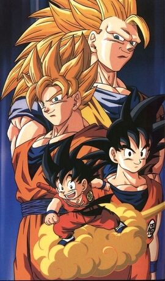

KAKAROT
GOKU THE SAIYAN WHO WAS RAISED ON EARTH BORN NAMED KAKAROT.
GOKU WAS RAISED BY HIS ADOPTED GRANDFATHER GOHAN WHO FOUND HIS POD IN THE MIDDEL OF THE FOREST.
GOKU COMES FROM A RACE OF EXTRATERRESTRIALS CALLED SAIYANS,
HIMSLEF HAVING BEEN SENT FROM THEIR HOMEPLANET TO PREPARE EARTH FOR SALE ON THE INTERGALACTIC MARKET BY DESTOYING ALL ITS LIFE.
WHILE GRANDPA GOHAN WAS TAKING CARE OF HIM,
GOKU SUFFERED A SEVERE HEAD INJURY AND FORGETS HIS MISSION TO CONQUER EARTH.
GOHAN RAISED GOKU WITH THE BASIC UNDERDSTANDING OF LIFE AND TAUGHT HIM HUNTING,
UNFORTUNATELY GOHAN BECAME SICK AND PAST AWAY WHEN GOKU WAS ONLY 5.
SOON AFTER GOHAN PAST AWAY,
A GIRL NAMED BULMA CAME TO THEIR HOUSE IN SEARCH OF THE DRAGONBALL THAT GOHAN LEFT FOR GOKU.

Dragon Ball Z follows the adventures of the adult Goku who, along with his companions,
defends the earth against an assortment of villains ranging from intergalactic space fighters and conquerors,
unnaturally powerful androids and near indestructible magical creatures.
While the original Dragon Ball anime followed Goku through childhood into adulthood,
Dragon Ball Z is a continuation of his adulthood life,
but at the same time parallels the maturation of his son, Gohan,
as well as other characters from Dragon Ball and more.
The separation between the series is also significant as the latter series takes on a more dramatic and serious tone.
The anime also features characters, situations and back-stories not present in the original manga.
in conclusion i bthink that dragon ball a worthy anime to watch as a first,
because it gives the viewer a feeling of happiness seeing the charecters growth and triumph over what was thought to be impossible.
other page